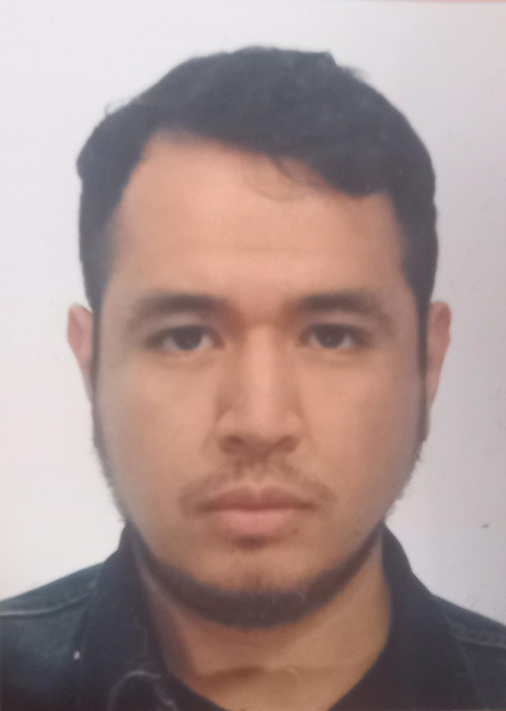

Omar Edenilson Herrera Torres
Nato a El Salvador il 06/10/2001
Studente di Ingegneria Informatica con forte senso di responsabilità, empatia e capacità di rapportarsi efficacemente con le persone. Motivato a mettermi in gioco in un ambiente nuovo, con attenzione all'efficienza e alla precisione. Affidabile e puntuale, cerco un'opportunità di lavoro che mi permetta di sviluppare competenze trasversali e contribuire con il mio impegno.
Formazione
- Istituto Comprensivo "Alberto Manzi" - Istruzione Secondaria di Primo Grado
- Liceo Scientifico Statale "Ettore Majorana" - Istruzione Secondaria di Secondo Grado
- Università degli Studi Roma Tre, Facoltà di Ingegneria - Istruzione Superiore
Esperienza
- Agriturismo "La Cerra" - 2022/2023
- Teleperformance - Gennaio 2023 / Maggio 2023
- Yuko Fusion Restaurant - Novembre 2023 / Luglio 2025
Competenze
Competenze Tecniche
- Familiarità con i sistemi operativi Windows e Linux
- Gestione e progettazione di basi di dati
- Sviluppo web (HTML, CSS, JavaScript)
- Programmazione in Java e C
- Sviluppo mobile con Dart e Flutter
- Conoscenza delle lingue: Spagnolo (madrelingua), Italiano (fluente), Inglese (fluente)
Competenze Relazionali e Personali
- Esperienza diretta a contatto con il pubblico in contesti diversi (ristorazione, customer service, accoglienza)
- Ottime capacità comunicative ed empatiche
- Gentilezza, pazienza e attenzione alle esigenze del cliente
- Alto senso di responsabilità e affidabilità
- Gestione dello stress in ambienti dinamici e affollati
- Flessibilità, spirito di adattamento e lavoro di squadra